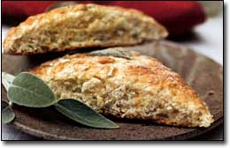

Sausage just wouldn't be sausage without sage. Bean soup, sage cheese and Thanksgivings stuffing would suffer incalculably, too. A couple of plants in your- kitchen garden, though, will save you from ever having to do without the comforting, complex, astringent taste of sage.
The common culinary sage, Salvia officinalis is one of the oldest cultivated herbs in the world. In ancient Europe and China, and later in North America, it was used as a seasoning and a tea, and renowned for its association with long life and good health.
The genus name, Salvia, derives from the Latin word " salvere," which means "to heal." The officinalis designa tion signals medicinal characteristics, too. Sage leaves possess antibiotic properties, and sage tea often is recommended as a digestive tonic and a cure-all for colds.
Sage also is rich in vitamins A and C, plus numerous antioxidant compounds. Sore throats, irritated gums and oral sores can be soothed by a gargle or mouthwash of strong sage tea. Because of its potency, though, avoid using sage medicinally if you are pregnant or nursing.
In European folklore, sage is reputed to foster deep sleep, so dried leaves often are added to sweet pillows. In the symbolic language of flowers, which originated in the Middle East and became popular in Europe and the United States during the Victorian Age, stems of sage placed in the tiny aromatic bouquets known as tussie mussies symbolize a long and healthy life.
The best culinary sage is native to southern Europe. Seasoning bread stuffings that accompany poultry or seafood is the most common use of sage, but it can be used in a dry rub, too, mixed with a little salt, pepper and flour, to season roast ed chicken, turkey or pork, and sausage.
Use a light hand with sage, whether fresh or dried, because a little goes a long way. Sage is the herb that makes chicken soup sing. It adds robust flavor to focaccia, homemade bread-sticks or quick breads such as biscuits or scones. Or you can mix it into a soft cheese for a tasty bread spread.
My favorite spinach casserole, and savory risottos and bread puddings (often called stratas) include a hint of sage, and any winter squash or egg dish benefits from a pinch.
If you must purchase this herb, you will need to choose between fresh, rubbed or ground. Use fresh sage whenever possible, and dry extra leaves to store whole (see directions for drying, Page 85).
For the freshest taste, crumble or "rub" dried sage leaves between your fingers or the palms of your hands just before adding them to foods. Buy rubbed sage rather than ground sage, which usually tastes somewhat bitter and has a shorter shelf life than the other kinds.
GROW YOUR OWN
This wonderful culinary herb is grown easily in a garden, where its distinctive gray-green leaves provide beautiful foliage. A mature sage plant covered with sparkling lilac blossoms also is breathtaking to behold.
Culinary varieties vary in hardiness. Those with green leaves are hardy to Zone 5. Purple culinary sage, which features soft purple hues in the new leaves, is hardy to Zone C, but plants with golden variegation in the leaves may not survive winters north of Zone 7.
You can enhance the winter hardiness of sages by planting them in a sheltered spot, such as near the south side of your house, and providing a protective mulch. In Zones 2 to 4, grow sages in containers, and keep them in a cool basement or other protected place through winter. Sage needs a period of winter dormancy, so no supplemental light is needed while plants are at rest.
Culinary sage can be grown from good-quality seed, but particularly with named varieties of purple-leafed or variegated forms, purchased plants or rooted cuttings will ensure robust young plants that are true to type and flavor.
Sage plants favor full sun in cool climates; opt for partial shade where summers are very hot. Any well-drained soil with a slightly acidic pH is acceptable. The first summer, pinch the stem tips back two or three times to encourage strong branching. Expect heavy blooming in the second year, and again in the third.
Fertilize established plants in late spring as new growth appears, and again in late summer. Also prune back plants by about half their size in spring, soon after they begin to grow.
By their third year in the garden, sage plants usually become woody and ragged. To keep a variety indefinitely, root a few stem cuttings every year. Here's how:
In late spring, take 4-inch cuttings of nonflowering stems found near the base of the plant. Trim off all but the top three leaves, dip the cut ends in rooting powder, and set the cuttings to root in seed-starting mix or a half-and-half mixture of peat moss and sand. Keep moist and a high percentage of the cuttings will root in four to five weeks. These can be set out in the garden or transplanted to larger containers to grow on for a few weeks.
To harvest sage for cooking, gather leaves in early summer, just before the plants bloom. For storage, keep the leaves whole. Begin drying them in a warm, well-ventilated space and complete the process in a 150-degree oven. Store the dried leaves, which will be curled and nearly crisp but still somewhat leathery, in an airtight container, away from light.
Adapted from Barbara Pleasant's forthcoming book, The Whole Herb, to be published by Square One Publishers.
Savory Sage Scones
1/2 cup whole-wheat flour, preferably organic
1 1/2 cups unbleached white flour, preferably organic
1 tsp. baking powder
1 tsp. salt
1 tsp. sugar
2 Tbsp. chopped fresh sage (or 1 Tbsp. dried sage)
1/4 tsp. black pepper
1 tsp. chopped fresh thyme (1/2 tsp. dried)
3 Tbsp. canola oil
1 cup grated sharp cheddar cheese
1 large egg, beaten
3/4 cup buttermilk or skim milk
8 whole sage leaves
Preheat oven to 425 degrees. Mix flours, baking powder, salt, sugar, pepper, sage and thyme. Add cheese. Beat the egg, mix with the oil and milk, and add to the flour mixture. Stir until dry ingredients are just moistened, about 15 strokes. Using floured hands, lightly knead dough 4 or 5 times; shape it into an 8-inch-wide circle on a baking sheet coated with cooking spray or on a pizza stone. Use a sharp knife to cut the circle into 8 wedges, but do not separate them. Lightly press 1 sage leaf onto the top of each wedge. Bake 18 to 20 minutes or until lightly browned. Makes 8 large scones.
Mother Earth News
|
 |
|
|